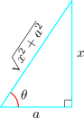
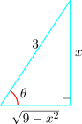
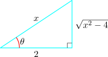

3.3 Trigonometric Integrals
The following identities may be useful in evaluating some trigonometric integrals
- 1.
- \(\sin ^2x + \cos ^2x = 1\)
- 2.
- \(1 + \tan ^2x = \sec ^2x\)
- 3.
- \(1 + \cot ^2x = \csc ^2x\)
- 4.
- \(\sin ^2x = \dfrac {1}{2}\big (1 - \cos 2x\big )\)
- 5.
- \(\cos ^2x = \dfrac {1}{2}\big (1 + \cos 2x\big )\)
- 6.
- \(\sin x \cos x = \dfrac {1}{2}\sin 2x\)
- 7.
- \(\sin x \cos y = \dfrac {1}{2}\Big [\sin \big (x - y\big ) + \sin \big (x + y\big )\Big ]\)
- 8.
- \(\sin x \sin y = \dfrac {1}{2}\Big [\cos \big (x - y\big ) - \cos \big (x + y\big )\Big ]\)
- 9.
- \(\cos x \cos y = \dfrac {1}{2}\Big [\cos \big (x - y\big ) + \cos \big (x + y\big )\Big ]\)
Below are two substitution rules which are useful in finding some trigonometric integrals
Integrals of the form \(\int \sin ^m x\cos ^n x\,dx\)
- If \(m\) is odd substitute \(\hspace {0.2cm} u = \cos x\hspace {0.2cm}\).
- If \(n\) is odd substitute \(\hspace {0.2cm} u = \sin x\).
Example 3.3.1. Find the integral \(\hspace {0.3cm} \displaystyle {\int \sin ^3x\cos ^{3/4}x\hspace {0.2cm}dx}\)
Solution. Let \(\hspace {0.2cm} u = \cos x \hspace {0.2cm}\) so that \(\hspace {0.2cm} du = -\sin x dx\)
\begin {align*} \int \sin ^3x\cos ^{3/4}x\hspace {0.2cm}dx & = \int \sin ^2x\cos ^{3/4}x\sin x dx\\\\ & = \int \big (u^2 - 1\big )\hspace {0.2cm} u^{3/4}\hspace {0.2cm} du = \int \big (u^{11/4} - u^{3/4}\big )du\\\\ & = \frac {4}{15}u^{15/4} - \dfrac {4}{7}u^{7/4} + c\\\\ & = \frac {4}{15}\cos ^{15/4} x - \dfrac {4}{7}\cos ^{7/4}x + c \end {align*}
\[\therefore \hspace {0.5cm}\int \sin ^3x\cos ^{3/4}x\hspace {0.2cm}dx = \frac {4}{15}\cos ^{15/4} x - \dfrac {4}{7}\cos ^{7/4}x + c\]
If both \(m\) and \(n\) are even integers the integral can be evaluated by first altering the powers using the identities:
- \(\sin ^2\theta = \dfrac {1}{2}\big (1 - \cos 2\theta \big )\)
- \(\cos ^2\theta = \dfrac {1}{2}\big (1 + \cos 2\theta \big )\)
Example 3.3.2. Find the integral \(\hspace {0.3cm} \displaystyle {\int \sin ^2x\cos ^4x\hspace {0.2cm}dx}\)
Solution. \[\sin ^2\theta = \dfrac {1}{2}\big (1 - \cos 2\theta \big )\]
\begin {align*} \cos ^4x & = \big (\cos ^2x\big )^2 = \Big [\dfrac {1}{2}\big (1 + \cos 2x\big )\Big ]^2\\ & = \dfrac {1}{4}\Big [1 + 2\cos 2x + \cos ^22x\Big ] = \dfrac {1}{4}\Big [1 + 2\cos 2x + \dfrac {1}{2}\big (1 + \cos 4x\big )\Big ]\\\\ & = \dfrac {1}{4}\Big [1 + 2\cos 2x + \dfrac {1}{2} + \dfrac {1}{2}\cos 4x\Big ]\\\\ & = \dfrac {1}{4}\Big [\dfrac {3}{2} + 2\cos 2x + \dfrac {1}{2}\cos 4x\Big ]\\ \end {align*}
\begin {align*} \sin ^2x\cos ^4x & = \dfrac {1}{2}\Big [1 - \cos 2x\Big ]\cdot \dfrac {1}{4}\Big [\dfrac {3}{2} + 2\cos 2x + \dfrac {1}{2}\cos 4x\Big ]\\\\ & = \dfrac {1}{8}\Big [\dfrac {1}{2}- \dfrac {1}{2}\cos 4x - \dfrac {1}{2}\cos 6x\Big ] \end {align*}
\begin {align*} \therefore \hspace {0.5cm} \int \sin ^2x\cos ^4x\hspace {0.2cm}dx & = \dfrac {1}{16}\int \big (1 - \cos 4x - \cos 6x\big )\hspace {0.2cm}dx\\\\ & = \dfrac {1}{16}\Big [x - \dfrac {1}{4}\sin 4x - \dfrac {1}{6}\sin 6x\Big ] + c\\ \end {align*}
Integrals of the form \(\int \tan ^m x\sec ^n x\,dx\)
- If \(n\) is even substitute \(\hspace {0.2cm} u = \tan x\)
- If \(m\) is odd substitute \(\hspace {0.2cm} u = \sec x\)
Example 3.3.3. Find the integral \(\hspace {0.3cm}\displaystyle {\int \tan ^6x\sec ^4x\hspace {0.2cm} dx}\)
Solution. Let \(\hspace {0.2cm} u = \tan x\hspace {0.3cm}\) then \(\hspace {0.3cm} du = \sec ^2xdx\hspace {0.3cm}\) Thus
\begin {align*} \int \tan ^6x\sec ^4x\hspace {0.2cm} dx & = \int \tan ^6x\underbrace {\sec ^2x}_{1 + \tan ^2x}\sec ^2x\hspace {0.1cm}dx\\\\ & = \int u^6\big (1 + u^2\big )du = \int \big (u^6 + u^8\big )du\\\\ & = \dfrac {1}{7}u^7 + \dfrac {1}{9}u^9 + c\\\\ & = \dfrac {1}{7}\tan ^7x + \dfrac {1}{9}\tan ^9x + c\\ \end {align*}
\[\int \tan ^6x\sec ^4x\hspace {0.2cm} dx = \dfrac {1}{7}\tan ^7x + \dfrac {1}{9}\tan ^9x + c\]
3.3.1 Method of Trigonometric Substitution
Some integrals may be simplified with the following trigonometric substitution
- 1.
- If and integrand contains \(\hspace {0.2cm} \sqrt {a^2 - x^2}\hspace {0.2cm}\), substitute \(\hspace {0.2cm} x = a\sin \theta \)
- 2.
- If the integrand contains \(\hspace {0.2cm} \sqrt {a^2 + x^2}\hspace {0.2cm}\), the substitution is \(\hspace {0.2cm} x = a\tan \theta \).
- 3.
- If the integrand contains \(\hspace {0.2cm} \sqrt {x^2 - a^2}\hspace {0.2cm}\), the substitution is \(\hspace {0.2cm} x = a\sec \theta \).
Find the integral \(\hspace {0.2cm} \displaystyle {\int \dfrac {dx}{\sqrt {a^2 + x^2}}}\)
Solution.
Let \(\hspace {0.2cm} x = a\tan \theta \hspace {0.2cm}\) so that \(\hspace {0.2cm} dx = a\sec ^2\theta \hspace {0.2cm}d\theta \hspace {0.3cm}\) Thus

\begin {align*} \int \dfrac {dx}{\sqrt {a^2 + x^2}} & = \int \dfrac {a\sec ^2\theta \hspace {0.2cm}d\theta }{\sqrt {a^2 + a^2\tan ^2\theta }}\\\\ & = \int \dfrac {a\sec ^2\theta \hspace {0.2cm} d\theta }{\sqrt {a^2\big (1 + \tan ^2\theta \big )}} = \int \dfrac {\sec ^2\theta }{\sec \theta }d\theta \\\\ & = \int \sec \theta \hspace {0.2cm}d\theta \\\\ & = \int \dfrac {\sec \theta \big (\tan \theta + \sec \theta \big )\hspace {0.2cm}d\theta }{\tan \theta + \sec \theta } = \int \dfrac {\tan \theta \sec \theta + \sec ^2\theta }{\tan \theta + \sec \theta }\hspace {0.2cm}d\theta \\\\ & = \ln \left |\tan \theta + \sec \theta \right | + c\\\\ & = \ln \left |\dfrac {x}{a} + \dfrac {\sqrt {x^2 + a^2}}{a}\right | + c\\ \end {align*}
\[\text {Note:}\hspace {0.5cm} \int \sec \theta \hspace {0.2cm}d\theta = \ln \left |\tan \theta + \sec \theta \right | + c\]
Solution.
Let \(\hspace {0.2cm} x = 3\sin \theta \hspace {0.2cm}\). Then \(\hspace {0.2cm} dx = 3\cos \theta \hspace {0.2cm}d\theta \hspace {0.2cm}\). Thus

\begin {align*} \int \dfrac {dx}{x^2\sqrt {9 - x^2}} & = \int \dfrac {3\cos \theta \hspace {0.2cm}d\theta }{\big (3\sin \theta \big )^2\sqrt {9 - 9\sin ^2\theta }} = \int \dfrac {\cos \theta }{3\sin ^2\theta \cdot 3 \sqrt {1 - \sin ^2\theta }}\hspace {0.2cm}d\theta \\\\ & = \dfrac {1}{9}\int \dfrac {1}{\sin ^2\theta }\hspace {0.2cm}d\theta \\\\ & = \dfrac {1}{9}\int \csc ^2\theta \hspace {0.2cm}d\theta \\\\ & = \dfrac {-1}{9}\cot \theta + c\\\\ & = \dfrac {-1}{9}\dfrac {\sqrt {9 - x^2}}{x} + c\\\\ \end {align*}
Find the integral \(\hspace {0.2cm}\displaystyle { \int \dfrac {\sqrt {x^2 - 4}}{x}\hspace {0.2cm}dx}\)
Solution.
Let \(\hspace {0.2cm} x = 2\sec \theta \hspace {0.2cm}\) so that \(\hspace {0.2cm} dx = 2\tan \theta \sec \theta \hspace {0.2cm}d\theta \)

\begin {align*} \int \dfrac {\sqrt {x^2 - 4}}{x}\hspace {0.2cm}dx & = \int \dfrac {\sqrt {4\sec ^2\theta - 4}}{2\sec \theta }\cdot 2\tan \theta \sec \theta \hspace {0.2cm} d\theta \\\\ & = 2 \int \tan ^2\theta \hspace {0.2cm} d\theta = 2\int \big (\sec ^2\theta - 1\big )d\theta \\\\ & = 2\Bigg [\int \sec ^2\theta d\theta - \int d\theta \Bigg ]\\\\ & = 2\tan \theta - 2\theta + c\\\\ & = \dfrac {2\sqrt {x^2 - 4}}{2} - 2 \sec ^{-1}\Big (\dfrac {x}{2}\Big ) + c=\sqrt {x^2 - 4} - 2\sec ^{-1}\Big (\dfrac {x}{2}\Big ) + c \end {align*}
Questions on this section
Stuck on something here? Ask below and it stays attached to this topic.